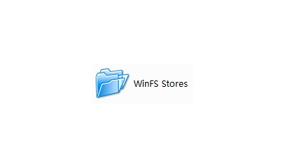

Nicrozoft
主页
操作系统
工具及其他
Minecraft 服务器
交流群
推荐
关于
返回
工具及其他产品
本页面展示了一些 Nicrozoft 开发的工具以及其他产品。

WinFS for Vista
View more
适用于 Vista SP2 的 WinFS Beta 1
Office SadEPa
View more
Office SadEPa 2021
Nicrozoft i964
View more
Nicrozoft i964 —— 一款类似于 i386 的封装解压缩工具